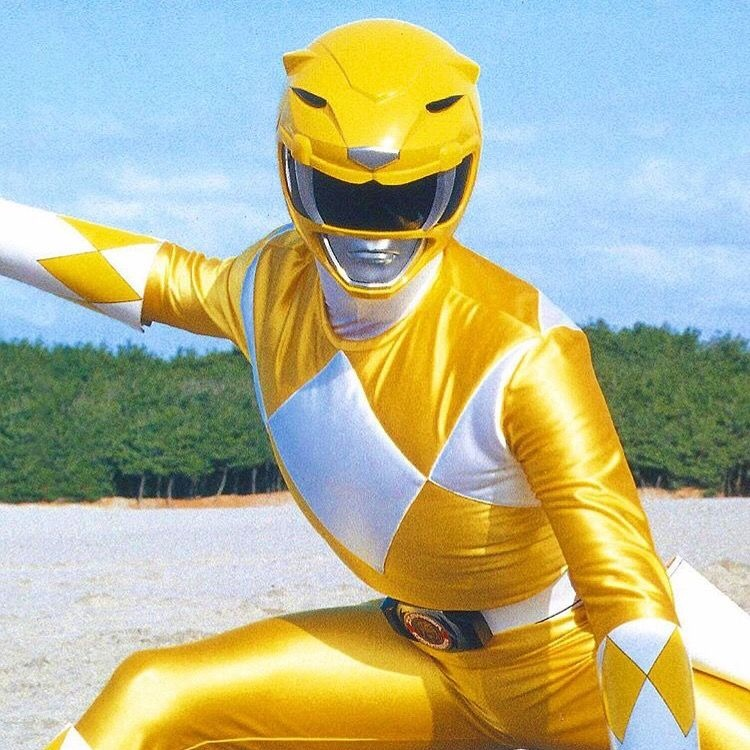
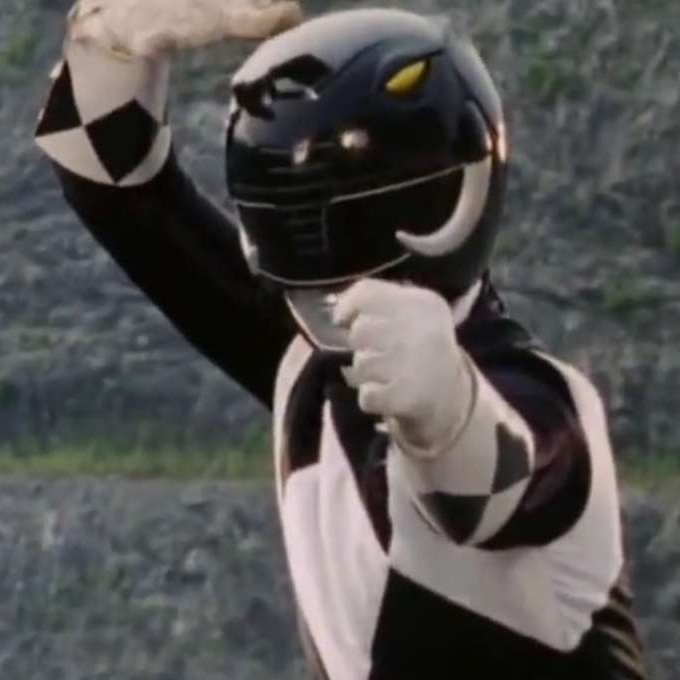
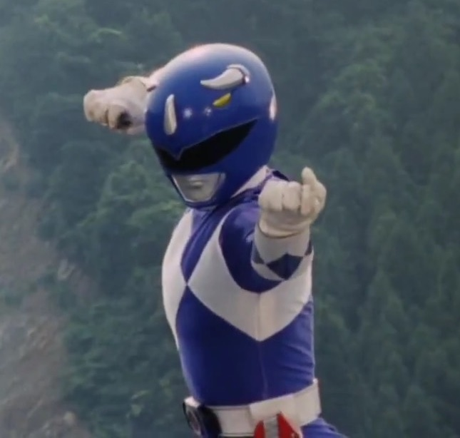
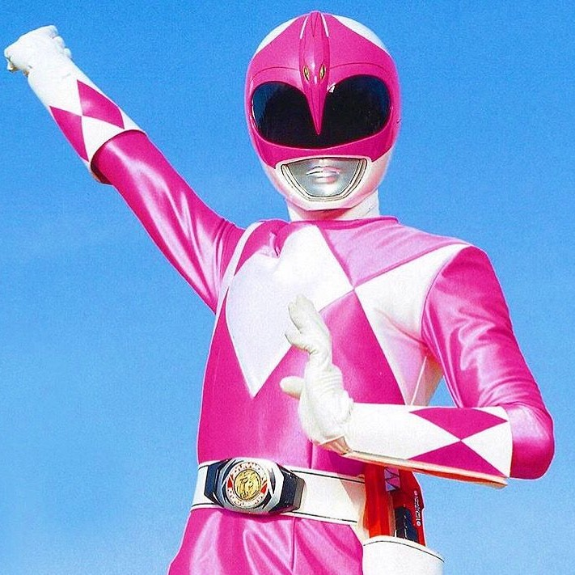
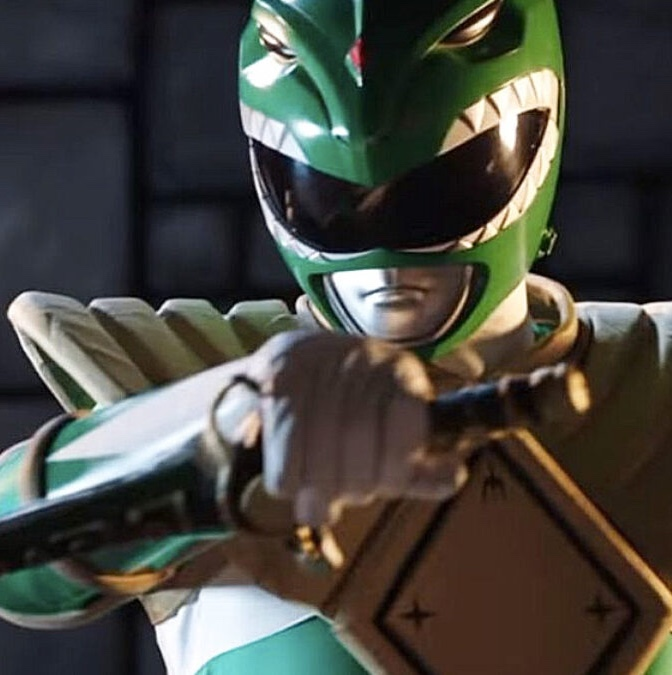

Dos astronautas liberan por accidente a una bruja alienígena llamada Rita Repulsa de su prision espacial, en la cual llevaba atrapada 10.000 años.
Inmediatamente, Rita y sus secuaces establecen un castillo en la Luna e inician un ataque contra la Tierra, con la intención de conquistarla. Zordon, un poderoso hechicero atrapado por Rita en un agujero en el tiempo y su asistente robótico Alpha 5, reclutan a un equipo de adolescentes para que se conviertan en los Power Rangers y defiendan la Tierra.
Los Power Rangers
Red Ranger
Black Ranger
Yellow Ranger


Jason Lee Scott fue el primer Red Ranger, nombrado oficialmente como tal, así como el líder original de los Mighty Morphin Power Rangers.
Trini Kwan fue la primera Ranger Amarilla de los Mighty Morphin Power Rangers. También se la conoce como la Ranger Yellow Mighty Morphin.
Zachary "Zack" Taylor es el primer Black Ranger de los Mighty Morphin Power Rangers. También es el segundo al mando de Jason Lee Scott.
Blue Ranger
Pink Ranger
Green Ranger



William "Billy" Cranston es el Ranger Azul de los Mighty Morphin Power Rangers. Billy es el segundo Ranger con mayor servicio en general detrás de Tommy Oliver .
Kimberly "Kim" Ann Hart es la primera Pink Ranger y la primera Pink Ninja Ranger de los Mighty Morphin Power Rangers.
Tommy Oliver, originalmente usado para el mal por Rita Repulsa, se convirtió rápidamente en bueno y ayudó a los Rangers a derrotar a las fuerzas de la oscuridad.